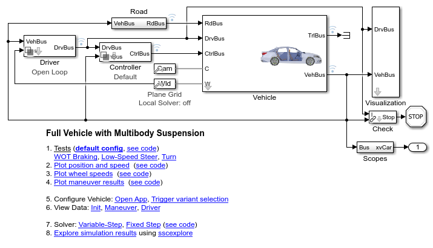
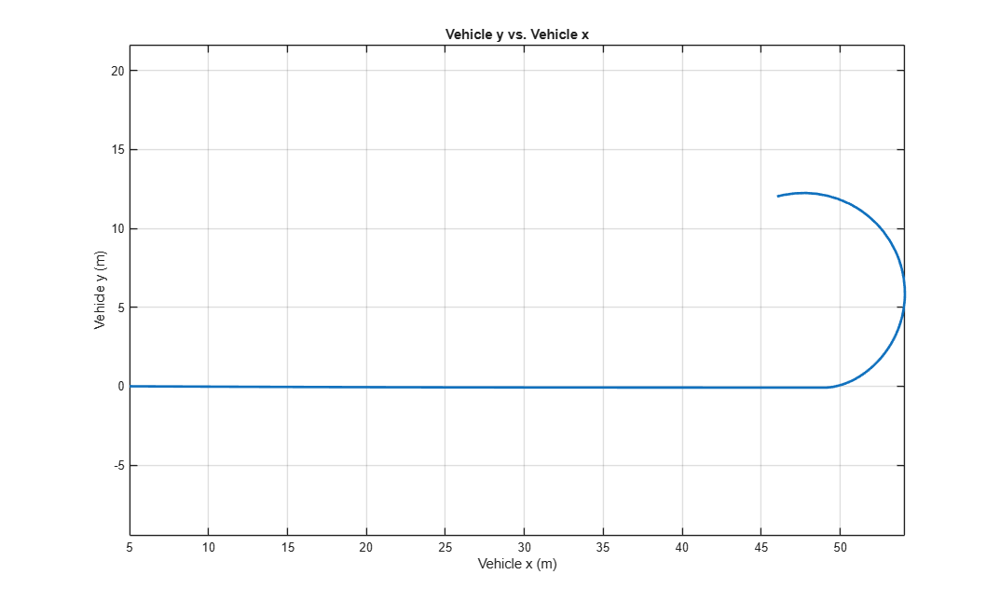
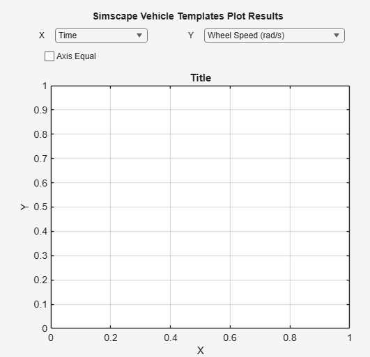
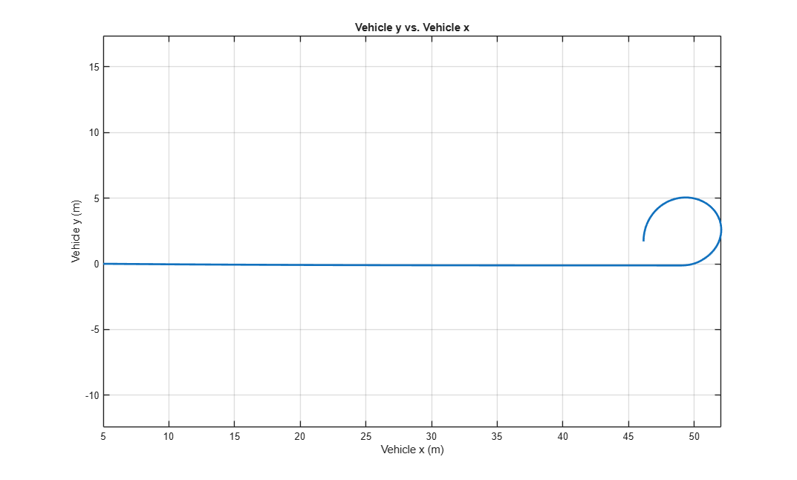
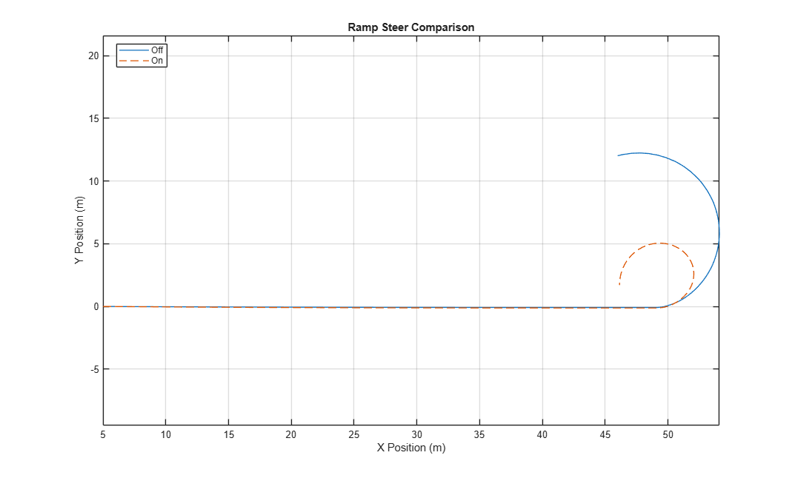

Nonlinear Suspension, Full Vehicle
The commands below simulate a multibody model of a vehicle with a suspension modeled using lookup tables to define suspension behavior. To test vehicle behavior, a ramp steer test is performed. Plots of the simulation results show how the suspension performs with and without rear-wheel steering.
Contents
- Step 1: Open full vehicle model
- Step 2: Configure model with nonlinear suspension
- Step 3: Select maneuver
- Step 4: Run simulation
- Step 5: Explore simulation results: vehicle position, rear steering off
- Step 6: Use interactive plotting tool to explore results
- Step 7: Enable rear steering
- Step 8: Run simulation
- Step 9: Explore simulation results: vehicle position, rear steering on
- Step 10: Compare vehicle position with rear steering off and on
Step 1: Open full vehicle model
This can be done from the project shortcut or MATLAB Command line.
mdl = 'sm_car';
open_system(mdl)

Step 2: Configure model with nonlinear suspension
This can be done by adjusting the model or from the MATLAB Command line. This step selects vehicle configuration using preset number 245 which is a SUV with a nonlinear suspension. Further adjustments are made to prepare the vehicle and controller for the tests
sm_car_load_vehicle_data(mdl,'245'); % Drive each wheel independently with an ideal torque source Vehicle.Powertrain.Driveline = VDatabase.Driveline.Axle2_L1_R1_L2_R2_default; Vehicle.Powertrain.Power = VDatabase.Power.Ideal_L1_R1_L2_R2_default; % Make the chassis geometry transparent Vehicle.Chassis.Body.BodyGeometry.Opacity.Value = 0.3; % Ensure spring control is set to None (passive springs) set_param([mdl '/Controller/Default'],... 'popup_spring_control_A1','None'); set_param([mdl '/Controller/Default'],... 'popup_spring_control_A2','None'); % Disable rear steering Control.Default.Steer.Gain.nRearAct.Value = 0;
Step 3: Select maneuver
This code configures the model to run a ramp steer test.
sm_car_config_maneuver(mdl,'Ramp Steer'); % Alternate: Double-Lane Change %sm_car_config_maneuver(mdl,'Double Lane Change ISO3888');
Step 4: Run simulation
This can be done from Simulink or from the MATLAB command line.
sim(mdl)
Step 5: Explore simulation results: vehicle position, rear steering off
Use the Simulink Data Inspector to plot the following quantities:
sm_car_sim_res_plot('pxVeh','pyVeh') axis(gca,'equal') % Save results for comparison: vehicle position sim_RWSOff_resX = sm_car_sim_res_get(logsout_sm_car,simlog_sm_car,Vehicle,'pxVeh'); sim_RWSOff_resY = sm_car_sim_res_get(logsout_sm_car,simlog_sm_car,Vehicle,'pyVeh');
sim_resX = sm_car_sim_res_get(logsout_sm_car,simlog_sm_car,Vehicle,'pxVeh'); sim_resY = sm_car_sim_res_get(logsout_sm_car,simlog_sm_car,Vehicle,'pyVeh');

Step 6: Use interactive plotting tool to explore results
sm_car_sim_res_app

Step 7: Enable rear steering
Control.Default.Steer.Gain.nRearAct.Value = 1;
% Make steering gain independent of speed
Control.Default.Steer.Gain.n.Value = 0.1*ones(size(Control.Default.Steer.Gain.n.Value));
Step 8: Run simulation
This can be done from Simulink or from the MATLAB command line.
sim(mdl)
Step 9: Explore simulation results: vehicle position, rear steering on
Use the Simulink Data Inspector to plot the following quantities:
sm_car_sim_res_plot('pxVeh','pyVeh') axis(gca,'equal') % Save results for comparison: strut pressure sim_RWSOn_resX = sm_car_sim_res_get(logsout_sm_car,simlog_sm_car,Vehicle,'pxVeh'); sim_RWSOn_resY = sm_car_sim_res_get(logsout_sm_car,simlog_sm_car,Vehicle,'pyVeh');
sim_resX = sm_car_sim_res_get(logsout_sm_car,simlog_sm_car,Vehicle,'pxVeh'); sim_resY = sm_car_sim_res_get(logsout_sm_car,simlog_sm_car,Vehicle,'pyVeh');

Step 10: Compare vehicle position with rear steering off and on
This plot shows the vehicle position for the ramp steer test with rear steering disabled and enabled.
figure(999); plot(sim_RWSOff_resX.data,sim_RWSOff_resY.data,'LineWidth',1,'DisplayName','Off'); hold on; plot(sim_RWSOn_resX.data,sim_RWSOn_resY.data,'--','LineWidth',1,'DisplayName','On'); hold off; xlabel('X Position (m)'); ylabel('Y Position (m)'); title('Ramp Steer Comparison'); axis equal legend('Location','Best'); grid on
